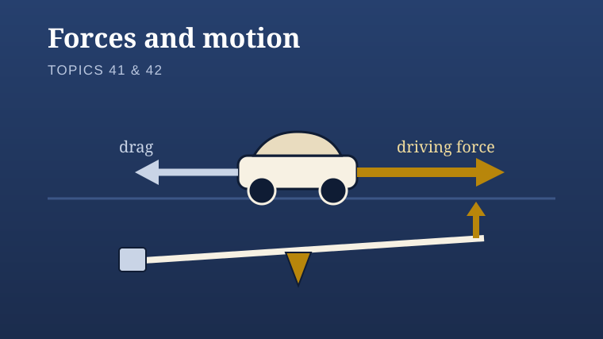

Year 9
Science
Choose a unit to see the lessons in teaching order.
Class9/SCI/Z
Units

Forces, evidence and design
Use models, practical evidence and bounded claims to reason scientifically.
4 lessons

Forces and motion
Balanced and unbalanced forces, energy for movement, speed from a ramp-car practical, and turning forces.
4 lessons